산업안전기사 (2003-08-31 기출문제)
1과목: 안전관리론
1. 부품의 고장이 있더라도 기계는 다음의 보수가 이루어질 때까지 안전한 기능을 유지하는 것은?
- Fail-Passive
- Fail-Active
- Fail-Lock
- Fail-Proof
(정답률: 55%)

2. 100년 전 일본 국철에서 실시된 기법인데 현재는 국내 산업 현장에서도 많이 활용되고 있는 것으로서 인간의 실수를 없애기 위하여 눈, 손, 입 그리고 귀를 이용하여 작업착수 전에 대뇌를 자극 시켜 안전 확보를 하기 위한 기법은?
- 브레인 스토밍
- 터치 앤드 콜
- 롤 플레잉
- 지적 확인
(정답률: 58%)
3. 적성 배치에 필요한 인간 능력의 측정은 정신 능력과 신체적 능력이 있다. 다음 중 정신능력의 주요 분석 단계에 해당되지 않는 것은?
- 언어이해
- 지각속도
- 반응속도
- 공간 시각화
(정답률: 69%)
4. 다음 재해코스트 산출에서 직접비에 해당되지 않는 것은?
- 장례비 및 치료비
- 요양비 및 휴업보상비
- 기계기구 손실 수리비 및 손실 시간비
- 장해 보상비
(정답률: 79%)
5. 부주의 발생 원인별로 방지하는 방법이 옳게 짝지어진 것은?
- 소질적 문제 - 안전교육
- 경험, 미경험 - 적성배치
- 작업 순서의 부자연성 - 인간공학적 접근방법
- 의식우회 - 작업 환경 개선
(정답률: 68%)
6. 자체검사를 할 때 기록사항에 포함되지 않는 것은?(관련규정 개정전 문제로 기존 정답은 3번입니다. 여기서는 3번을 누르면 정답 처리 됩니다. 자세한 내용은 해설을 참고하세요.)
- 검사방법
- 검사부분
- 검사판정기준(검사기준)
- 검사결과 및 조치
(정답률: 78%)
7. 산업재해 4개 재해의 기본원인(4M)중 작업정보에 해당되는 것은?
- Management
- Media
- Machine
- Man
(정답률: 74%)
8. 다음 중 안전교육의 제1단계는 무엇인가?
- 태도
- 기능
- 지식
- 관리
(정답률: 73%)
9. 작업 통로에 기름이 흩어져 있어서 작업자가 지나가다 넘어져 바닥에 머리를 다쳤다. 재해분석이 가장 옳은 것은?
- 사고유형-충돌, 기인물-기름, 가해물-바닥
- 사고유형-전도, 기인물-기름, 가해물-바닥
- 사고유형-전도, 기인물-바닥, 가해물-기름
- 사고유형-낙하, 기인물-통로, 가해물-바닥
(정답률: 75%)
10. 법상의 안전교육 중 관리감독자 교육내용이 아닌 것은?
- 표준안전작업방법 및 지도 요령에 관한 사항
- 유해ㆍ위험 작업환경 관리에 관한 사항
- 관리감독자의 역할과 임무에 관한 사항
- 보호구 및 안전장치 취급과 사용에 관한 사항
(정답률: 66%)
11. 버드(Bird)의 재해발생에 관한 이론 중 기본원인은 몇 단계에 해당되는가?
- 제1단계
- 제2단계
- 제3단계
- 제4단계
(정답률: 66%)
12. 다음 중 개인 안전지도 방법에 부적당한 것은?
- O.J.T
- Off J.T
- Follow-up
- 카운셀링
(정답률: 66%)
13. 산업안전표지 중 안내표지(녹색)의 사용에 해당되는 것은?
- 사실의 고지 및 특정행위의 지시
- 비상구 및 차량의 통행표시
- 유해 행위의 금지
- 기계 방호물
(정답률: 79%)
14. 버드(F.E.Bird Jr)의 사고 발생 도미노 이론에서 직접원인은 무엇이라고 하는가?
- 위험
- 접촉
- 기원
- 징후
(정답률: 55%)
15. 매슬로우의 인간의 욕구 중 5번째 단계에 속하는 것은?
- 존경
- 사회
- 자아실현
- 안전
(정답률: 79%)
16. 적응기제(Adaptation Mechanism)의 종류 중 자기의 욕구 불만이나 긴장 등의 약점을 위장하여 자기의 불리한 입장을 보호 또는 방어하려는 기제는?
- Escape Mechanism
- Aggressive Mechanism
- Defence Mechanism
- Repression Mechanism
(정답률: 75%)
17. 무재해운동의 이념 중 선취의 원칙이란?
- 재해를 예방하거나 방지하는 것
- 근로자 전원이 일체감을 조성하는 것
- 사고의 잠재요인을 사후에 파악하는 것
- 근로자 전원이 자발성 자주성으로 안전활동을 촉진하는 것
(정답률: 75%)
18. 교육의 4단계 가운데 제시에 해당되는 설명으로 옳은 것은?
- 과제를 주어 문제해결을 시키거나 습득시키는 단계
- 관심과 흥미를 가지고 심신의 여유를 주는 단계
- 연수 내용을 정확하게 이해하였는가를 테스트하는 단계
- 내용을 확실하게 이해시키고 납득시키는 단계
(정답률: 55%)
19. 다음 재해의 원인 중 생리적 원인에 해당되는 것은?
- 작업자의 판단
- 작업자의 피로
- 작업자의 적성
- 작업자의 무지
(정답률: 84%)
20. 다음 중 보호구와 관련한 사항으로서 맞는 것은?
- 각종 위험으로부터 눈을 보호하기 위하여는 보호장구가 필요하나, 위험이 없는 작업장에서 착용하면 오히려 사고의 위험이 있다.
- 귀마개는 저음부터 고음까지를 모두 차단할 수 있는 양질의 제품을 사용해야 한다.
- 산소결핍지역에서는 필히 방독마스크를 착용하여야 한다.
- 선반작업과 같이 손에 재해가 많이 발생하는 작업장에서는 장갑착용을 의무화한다.
(정답률: 51%)
2과목: 인간공학 및 시스템안전공학
21. 다음 시스템의 신뢰도는 약 얼마인가?
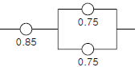
- 0.6969
- 0.7969
- 0.8969
- 0.9969
(정답률: 66%)
22. 결함수 분석법의 활용 및 기대효과와 거리가 먼 것은?
- 사고원인 규명의 간편화
- 사고원인 규명의 이중화
- 사고원인 분석의 정량화
- 사고원인 분석의 일반화
(정답률: 61%)
23. 어떤 결함수를 분석하여 minimal cut set를 구하니 다음과 같았다. "k1=[1,2], k2=[1,3], k3=[2,3]" 각 기본사상의 발생확률을 qi, i=1,2,3라 할 때 정상사상 발생확률 함수 g(Q)를 구하면?
- q1q2 + q1q2 - q2q3
- q1q2 + q1q3 - q2q3
- q1q2 + q1q3+ q2q3 - q1q2q3
- q1q2 + q1q3 + q2q3 - 2q1q2q3
(정답률: 61%)
24. 그림(a)는 양단이 벌어져 보이고, 그림(b)는 중앙이 벌어져 보인다. 누구의 착시현상인가?
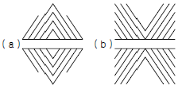
- Müler-Lyer
- Helmholz
- Herling
- Poggendorf
(정답률: 47%)
25. 그림에서 나타내는 기호는 무슨 사상을 나타내는가?
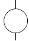
- 결함사상
- 기본사상
- 통상사상
- 생략사상
(정답률: 66%)
26. 그림의 G3 Tree를 수식으로 나타낸 것은?
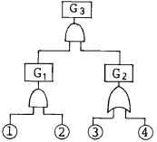
- ① x ② x ③ x ④
- ① x ② x (③ + ④)
- (① + ②) x ③ x
- ④ (① + ②) x (③ + ④)
(정답률: 63%)
27. FTA에 의한 재해사례 연구 순서 중 제1단계는?
- 사상(事象)의 재해원인의 규명.
- FT도(圖)의 작성
- 톱(TOP)사상의 선정
- 개선계획의 작성
(정답률: 69%)
28. 신뢰도가 r인 n개 요소가 병렬로 구성된 시스템의 신뢰도는?
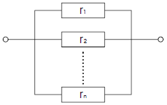
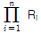
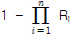
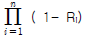
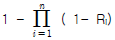
(정답률: 58%)
29. 어떤 설비의 시간당 고장률이 일정하다고 한다. 이 설비의 고장간격은 다음 중 어떤 확률분포를 따르는가?
- t분포
- Erlang 분포
- 와이블분포
- 지수분포
(정답률: 65%)
30. 다음 중 인간-기계 체제(Man-machine system)의 연구는 주로 무엇을 추구하기 위한 것인가?
- 정보저장의 극대화
- 운전시 피로의 극소화
- 시스템의 신뢰성 극대화
- 안전성 제고와 능률의 극대화
(정답률: 73%)
31. 시스템내의 위험요소가 얼마나 위험한 상태에 있는가를 정성적으로 평가하는 시스템 안전분석 기법은?
- PHA
- FHA
- FMEA
- MORT
(정답률: 47%)
32. 양립성이란 인간의 기대가 자극들, 반응들, 혹은 자극-반응조합과 모순되지 않는 관계를 말한다. 다음 중 양립성의 분류에 속하지 않는 것은?
- 공간적 양립성
- 형태적 양립성
- 개념적 양립성
- 운동 양립성
(정답률: 55%)
33. 조작자와 제어버튼 사이의 거리, 선반의 높이, 조작에 필요한 힘 등을 정할 때 적용되는 인체측정자료 응용원칙은 어느 것인가?
- 평균치설계
- 최대치설계
- 최소치설계
- 조절식설계
(정답률: 42%)
34. 재해예방 측면에서 FT의 상부측 정상사상에 가까운 쪽의 OR 게이트를 어떠한 인터록이나 안전장치 등에 의해 AND게이트로 바꿔주면 어떠한 현상이 나타나는가?
- 재해율의 급격한 증가
- 재해율의 점진적인 증가
- 재해율의 변화가 없음
- 재해율의 급격한 감소
(정답률: 58%)
35. 기계에 고장이 발생하였을 경우 어느 기간 동안 기계의 기능이 계속되어 재해로 발전되는 것을 막는 기구를 무엇이라 하는가?
- fool-proof
- fail-safe
- safe-life
- man-machine system
(정답률: 63%)
36. 사고의 요인 중 기계 시스템(System)의 결격사항이 아닌 것은?
- 성능저하의 결격
- 작동상의 결격
- 설계상의 결격
- 착시상의 결격
(정답률: 70%)
37. 표준체구의 남자가 서서 작업을 하는 경우, 작업점의 위치가 신체의 전방 20cm일 때 가장 적당한 작업점의 높이는?
- 높이 60cm
- 높이 90cm
- 높이 120cm
- 높이 150cm
(정답률: 44%)
38. 인간-기계 통합체계의 유형이 아닌 것은?
- 수동체계
- 자동체계
- 기계화체계
- 특수체계
(정답률: 55%)
39. 다음 그림의 결함수에서 최소 컷셋을 올바르게 구한 것은?시 정답과 해설을 확인하시기 바랍니다.)(오류 신고가 접수된 문제입니다. 반드시 정답과 해설을 확인하시기 바랍니다.)
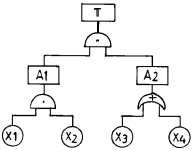
- (X1, X2)
- (X1, X2, X3)
- (X1, X3)
- (X2, X3)
(정답률: 33%)
40. 작업시간에 관한 여러 방법 중 좋은 성과를 거두고 있다고 볼 수 없는 것은?
- 영구적인 시간제 고용
- 주당 4일 업무
- 공식적인 휴식
- 교대근무
(정답률: 72%)
3과목: 기계위험방지기술
41. 선반의 방호장치 중 적당하지 않은 것은?
- 슬라이딩(sliding)
- 실드(shield)
- 척커버
- 칩브레이커
(정답률: 54%)
42. 클러치 맞물림 개소수 4개, 300SPM(stroke per minute)의 동력프레스기(마찰 클러치) 양수기동식 안전장치의 안전거리는?
- 360mm
- 315mm
- 240mm
- 225mm
(정답률: 54%)
43. 용접장치에 사용되는 가스 장치실의 구조에 대한 설명 중 틀린 것은?
- 벽의 재료는 불연성의 재료를 사용할 것
- 천정과 벽은 견고한 콘크리트 구조일 것
- 가스누출시 당해 가스가 정체되지 않도록 할 것
- 지붕 및 천정의 재료는 가벼운 불연성의 재료를 사용 할 것
(정답률: 65%)
44. 연삭기의 덮개(커버)와 연삭숫돌의 원주면의 간격은 몇 mm 이내인가?(오류 신고가 접수된 문제입니다. 반드시 정답과 해설을 확인하시기 바랍니다.)
- 2
- 3
- 4
- 5
(정답률: 45%)
45. 다음은 설비의 이상시 전형적인 검출방법을 연결한 것중 틀린 것은?
- 풀림 : 소프법, 페로그래픽
- 부식 : 전기저항, 초음파
- 이상온도 : 열전대, 서머크레이온
- 이상진동 : 진동픽업
(정답률: 45%)
46. 공기압 구동식 산업용로봇의 경우 이상시 조치사항이 아닌 것은?
- 공기누설의 유무
- 물방울의 혼입유무
- 압력저하 유무
- 불순물의 혼입유무
(정답률: 35%)
47. 활차륜이 5개 달린 활차(滑車)장치와 활차로 2톤의 화물을 인양할 때 각 로프의 스트레인 강도는?
- 400kg
- 300kg
- 250kg
- 200kg
(정답률: 53%)
48. 공기압축기의 운전정지시 탱크내 공기의 역류방지기는?
- 안전밸브
- 파열판
- 체크밸브
- 언로드밸브
(정답률: 50%)
49. 기계 구조물의 파손은 주로 용접부에서 발생한다. 이는 용접시 발생되는 결함을 기인하기 때문이다. 다음 중 용접의 결함으로 볼 수 없는 것은?
- 언더컷(under cut)
- 비드(bead)형성
- 용입불량
- 기공(blow hole)
(정답률: 57%)
50. 다음 중 연삭기를 사용한 작업시에 작업자가 안심하고 작업을 할 수 있는 상태인 것은?
- 결함이 없는 자유연삭 평형 V숫돌을 사용하여 2500m/min의 속도에서 연삭작업을 한다.
- 안전덮개가 인장강도18kg/mm2이상이고, 연신율이 14%인 압연강판이다.
- 숫돌직경이 5cm 이상인 경우 안전덮개와 칩비산방지 실드를 설치한다.
- 숫돌 교체시 1분 이상 시운전을 실시한다.
(정답률: 55%)
51. 기계설비의 본질적 안전화 방법으로 옳지 않은 것은?
- 조작상 위험이 없도록 설계할 것
- 안전기능은 기계외부에 부착되어 있을 것
- 페일세이프(fail safe) 기능을 가질 것
- 풀 프루프(fool proof) 기능을 가질 것
(정답률: 66%)
52. 기계기구에 대한 방호 조치이다. 이 중 연결이 잘못된 것은?
- 프레스기 - 감응식 방호장치
- 승강기 - 과부하 방지장치
- 연삭기 - 반발예방장치
- 아세틸렌 용접기 및 가스 용접장치 - 안전기
(정답률: 51%)
53. 공작기계의 절삭 작업시 안전대책으로 잘못된 것은?
- 바이트는 정확하고, 견고하게, 되도록 짧게 장치한다.
- 절삭중인 제품의 가공상태를 확인하기 위해 회전하고 있는 물체를 수시로 측정한다.
- 가공 중에는 장갑을 착용하지 않지만, 보호안경은 반드시 착용한다.
- 절삭분 제거시는 브러시나 긁기봉을 사용한다.
(정답률: 67%)
54. 배관 파이핑(piping)에서 열응력 발생문제를 해결하는데 가장 적절한 연결방법은?
- 유니언 이음
- 리벳 이음
- 자재 이음
- 신축 이음
(정답률: 45%)
55. 다음 중 보일러에 관한 설명으로서 옳지 않은 것은?
- 수면계의 고장은 과열의 원인이 된다.
- 부적당한 급수처리는 부식의 원인이 된다.
- 안전밸브의 작동불량은 압력상승의 원인이 된다.
- 안전장치가 불량할 때에는 최대사용기압 1.25배에서 파열하는 원인이 된다.
(정답률: 62%)
56. 진동장애의 예방대책이 아닌 것은?
- 저진동공구를 사용한다.
- 진동업무를 자동화한다.
- 방진장갑과 귀마개를 한다.
- 실외작업을 한다.
(정답률: 56%)
57. 인장강도가 25kg/mm2인 강판의 안전율이 4라면 허용응력은?
- 4.25 kg/mm2
- 6.25 kg/mm2
- 8.25 kg/mm2
- 10.25 kg/mm2
(정답률: 66%)
58. 다음 중 왕복운동을 하는 동작운동과 움직임이 없는 고정부분 사이에 형성되는 위험점은?
- 협착점
- 끼임점
- 절단점
- 물림점
(정답률: 61%)
59. 드릴링 머신에서 드릴 회전수가 1000rpm이고, 드릴 지름이 20mm일 때 원주속도는 얼마인가? (단, π = 3.14 임)
- 62.8m/min
- 31.4m/min
- 3.14m/min
- 6.28m/min
(정답률: 65%)
60. 기계설비에 의한 안전사고 예방과 생산효율을 증대시키기 위한 3가지 요소에 들지 않는 것은?
- 안전설계
- 보전관리
- 신종 기계의 개발
- 안전작업 방법의 설정
(정답률: 68%)
4과목: 전기위험방지기술
61. 전력케이블을 사용하는 경우나 역률개선용 콘덴서 등이 접속되어 있는 전로에서 정전작업을 할 경우 반드시 취해야하는 조치 사항은 어떤 것인가?
- 개폐기의 통전금지
- 잔류전하의 방전
- 안전표지의 부착
- 활선근접작업에 대한 방호
(정답률: 55%)
62. 인체의 전기저항 R을 1000[Ω]이라하면 이때 위험 한계 에너지는 몇 J인가? (단, 통전시간은 1초임)
- 17.22
- 27.22
- 37.22
- 47.22
(정답률: 55%)
63. 저압전로에 2000(A)의 전류가 흘렀을 때 누설전류는 몇 암페어(A)를 초과할 수 없는가?
- 2
- 1
- 0.2
- 0.1
(정답률: 55%)
64. 저압의 옥내배선, 옥외배선에서 활선부와의 접촉에 의한 위험을 방지하기 위하여 전선상호간, 전선과 대지간에 절연저항이 어느 값 이상이어야 한다. 전압과 절연저항의 연결이 잘못 된 것은?
- 대지전압 150[V] 이하 - 0.1[MΩ]
- 사용전압 400[V] 이하 - 0.2[MΩ]
- 사용전압 400[V] 미만 - 0.3[MΩ]
- 사용전압 240[V] 이하 - 0.2[MΩ]
(정답률: 49%)
65. 방폭지역의 구분시 환기가 충분한 장소란 대기 중의 가스⋅증기의 밀도가 폭발하한계의 몇 % 를 초과하여 축적되는 것을 방지하는데 충분한 환기량이 보장되는 장소를 말하는가?
- 20%
- 25%
- 30%
- 40%
(정답률: 46%)
66. 인체의 감전사고 방지책으로써 가장 좋은 방법은?
- 중성선을 접지한다.
- 단상 3선식을 채택한다.
- 변압기의 1⋅2차를 접지한다.
- 계통을 비접지 방식으로 한다.
(정답률: 52%)
67. 가공 송전 선로에서 낙뢰의 직격을 받았을 때 발생하는 낙뢰전압이나 개폐 서지 등과 같은 이상 고전압은 일반적으로 충격파라 부르는데 이러한 충격파는 어떻게 표시하는가?
- 파고치에 달할 때까지의 시간 × 파미 부분에서 파고치의 50%로 감소할 때까지의 시간
- 파고치에 달할 때까지의 시간 × 파미 부분에서 파고치의 30%로 감소할 때까지의 시간
- 파고치에 달할 때까지의 시간 × 파미 부분에서 파고치의 20%로 감소할 때까지의 시간
- 파고치에 달할 때까지의 시간 × 파미 부분에서 파고치의 10%로 감소할 때까지의 시간
(정답률: 57%)
68. 자기방전식 제전기의 특징으로 틀린 것은?
- 아세테이트 필름의 권취공정, 셀로판제조공정에 유용하다.
- 코로나 방전을 일으켜 공기를 이온화 하는 것을 이용한 것이다.
- 정상상태에서 방전현상은 수반하나 착화하는 경우는 없지만 본체가 금속이므로 접지를 해야 한다.
- 제전능력이 작아서 충분한 제전시간이 필요하며 특히 이동하는 물체의 제전에 부적합하다.
(정답률: 44%)
69. 전기설비의 잠재적 점화원인 것은?
- 직류전동기의 정류자
- 전동기의 고온부
- 보호계전기의 전기접점
- 변압기의 권선
(정답률: 33%)
70. B.E.Maholob의 연구에 의하면 인체의 피부 중 1∼2mm2 정도의 적은 부분은 전기자극에 의해서 신경이 이상적으로 흥분해 다량의 피지가 분비해서 그 부분의 전기저항이 1/10정도로 적어지는 피전점(皮電点)이 있다고 보고하고 있다. 이러한 피전점은 다음 중 어느 부분인가?
- 허리
- 손등
- 머리
- 발등
(정답률: 63%)
71. 주위공간에 암모니아가스가 존재하는 환경에서 클로로프렌 피복케일을 배선하는 경우 부식의 정도는?
- 거의 영향을 주지 않는다.
- 약간 영향을 준다.
- 성능이 약간 저하한다.
- 성능이 현저히 저하한다.
(정답률: 39%)
72. 전기설비사용장소의 폭발위험성에 대한 위험장소 판정시의 기준과 가장 관계가 먼 것은?
- 위험가스의 현존가능성
- 통풍의 정도
- 위험물질의 온도
- 작업자의 영향
(정답률: 23%)
73. 저압 및 고압선을 직접 매설식으로 매설할 때 중량물의 압력을 받지 않는 장소의 매설깊이는?
- 100[cm]이상
- 90[cm]이상
- 70[cm]이상
- 60[cm]이상
(정답률: 41%)
74. 다음은 정전기에 관련한 설명이다. 잘못 된 것은?
- 정전유도에 의한 힘은 반발력이다.
- 발생한 정전기와 완화한 정전기의 차가 마찰을 받은 물체에 축적되는 현상을 대전이라 한다.
- 같은 부호의 전하는 반발력이 작용한다.
- 겨울철에 나일론제 셔츠 등을 벗을 때 경험한 부착 현상이나 스파크발생은 박리대전현상이다.
(정답률: 47%)
75. 자동차가 통행하는 도로에 지중전선로를 직접 매설식으로 시설할 수 있는 전선은?
- 비닐 외장 케이블
- 콤바인 덕트 케이블(combine duct cable)
- 폴리에틸렌 외장 케이블
- 클로로프렌 외장 케이블
(정답률: 55%)
76. 인체 피부의 전기저항에 영향을 주는 주요 인자와 거리가 먼 것은?
- 통전경로
- 접촉면적
- 전압의 크기
- 인가시간
(정답률: 29%)
77. 작업복에 50(㎛)의 직경을 갖는 도전성 섬유를 넣어 코로나 방전을 방출하므로써 정전기를 제거하는 제전복을 입게 되는데, 이 제전복을 착용하지 않아도 되는 장소는?
- 전산실 등 전자기계 취급 장소
- 상대 습도가 낮은 장소
- 반도체등 전기소자 취급 작업
- 분진발생 작업이나 장소
(정답률: 36%)
78. 피뢰기가 갖추어야 할 이상적인 성능 중 잘못 된 것은?
- 제한전압이 낮아야 한다.
- 반복동작이 가능하여야 한다.
- 뇌전류 방전 능력이 크고 속류 차단이 확실해야 한다.
- 충격 방전 개시 전압이 높아야 한다.
(정답률: 58%)
79. 비접지식 전로를 잘못 설명한 것은?
- 300V 저압에 용량 3kVA 이하에 안정적으로 사용
- 혼촉방지판 접지를 고압측과 저압측 권선의 중간에 넣어 만든 변압기
- 변압기 고압측과 저압측을 두고 저압전로 중간에 절연변압기를 사용하는 방법
- 비접지식은 표현 그대로 고⋅저압 권선에 접지를 하지 않고 기능 절연변압기 사용
(정답률: 35%)
80. 전기누전 화재의 요인에 포함되지 않는 것은?
- 발화점
- 누전점
- 접지점
- 접촉점
(정답률: 37%)
5과목: 화학설비위험방지기술
81. 최소발화에너지와 압력과의 관계는?
- 압력이 클수록 최소발화에너지는 감소한다.
- 압력이 클수록 최소발화에너지는 증가한다.
- 압력에 관계없이 일정하다.
- 압력과는 관계없다.
(정답률: 46%)
82. 다음 중 차압식 유량계가 아닌 것은?
- 습식가스미터(wet gasmeter)
- 피토관(pitot tube)
- 오리피스미터(orifice meter)
- 로터미터(rota meter)
(정답률: 36%)
83. TNT 100kg이 폭발할 때 폭심으로부터 400m 지점의 창유리가 반파된다고 한다. TNT 10kg이 폭발할 때 같은 위력을 가지는 거리는?
- 40.5m
- 100.8m
- 185.6m
- 202.5m
(정답률: 30%)
84. 국소배기시설의 후드(Hood)에 의한 흡인 요령 중 잘못된 것은?
- 국부적인 흡인 방식을 선택한다.
- 후드의 개구부 면적을 크게 한다.
- 후드를 발생원에 되도록 접근시킨다.
- 송풍기의 소요 동력에는 충분한 여유를 둔다.
(정답률: 54%)
85. 프로판 가스가 공기 중 연소할 때의 화학양론 농도는 약 얼마인가?
- 2.5%
- 4.0%
- 5.6%
- 9.5%
(정답률: 45%)
86. 다음 중 본질안전 방폭구조에 사용되는 약어는?
- d
- o
- i
- p
(정답률: 62%)
87. 다음 중 자연발화성 물질과 거리가 먼 것은?
- 질화면
- 셀룰로이드
- 석탄분
- 소석회
(정답률: 40%)
88. 소화약제와 소화효과의 조합이 잘못 된 것은?
- 공기포 소화약제 - 질식소화
- 분말 소화약제 - 냉각소화
- 강화액 소화약제 - 냉각소화
- 이산화탄소 소화약제 - 질식소화
(정답률: 59%)
89. 다음의 고압가스 중 압축가스에 해당되는 것은?
- 질소
- LPG
- 탄산가스
- 염소
(정답률: 44%)
90. 다음 중에서 혼합위험의 영향인자가 아닌 것은?
- 온도
- 압력
- 농도
- 물질량
(정답률: 55%)
91. 포화탄화수소계의 가스에서는 폭발하한계의 농도 X(vol%)와 그의 연소열(kcal/mol) Q의 곱은 일정하게 된다는 Burgess-Wheeler의 법칙이 있다. 연소열이 635.4kcal/mol인 포화탄화수소 가스의 하한계 계산치는?
- 1.73
- 1.95
- 2.68
- 3.20
(정답률: 39%)
92. 전리방사선(電離放射線)이 인체에 조사(照射)되었을 때 신체 외부에 제1도의 장해인 탈모, 경도발적(輕度發赤) 등을 나타내는 방사선의 조사량(照射量)은?
- 50∼100 rem
- 200∼300 rem
- 350∼500 rem
- 510∼650 rem
(정답률: 43%)
93. 다음 중 고압가스의 용기파열사고의 주요원인에 해당되지 않는 것은?
- 용기내 압력 부족
- 용기내의 이상 압력 상승
- 용기에 부속된 압력계의 파열
- 용기내 폭발성 혼합기의 발화
(정답률: 27%)
94. 다음의 소화제(消火劑)중에서 A급 화재에 가장 효과적인 것은?
- 중탄산나트륨과 황산알루미늄을 주성분으로 한 기포제
- 물 또는 물을 많이 함유한 용액
- 할로겐화 탄화수소를 주성분으로 한 증발성 액체
- 질소 또는 탄산가스 등의 불연성 기체
(정답률: 55%)
95. 고압(高壓)의 공기 중에서 장시간 작업하는 경우에 일어나는 잠함병(潛函病)또는 잠수병(潛水病)은 어떤 물질에 의하여 중독현상이 일어나는가?
- 아황산가스
- 황화수소
- 일산화탄소
- 질소
(정답률: 60%)
96. 포스겐가스 누설검지의 시험지로 사용되는 것은?
- 연당지
- 염화파라듐지
- 하리슨시험지
- 초산구리벤젠지
(정답률: 51%)
97. 충전탑과 트레이드탑을 비교할 때 트레이드탑의 특징으로 알맞은 것은?
- 압력손실이 적다.
- hold up이 적다.
- 기체 상승속도를 크게 할 수 있다.
- 부식성 유체에 적합하지 않다.
(정답률: 38%)
98. 반응기를 설계할 때 고려해야 할 요인 중 가장 관계가 적은 것은?
- 상의 형태
- 온도 범위
- 부식성
- 중간생성물의 유무
(정답률: 51%)
99. 다음 물질을 혼합할 때 위험성(발화 또는 폭발)이 존재하는 것은?
- 황-에테르
- 황-아세톤
- 황-케톤
- 황-황산
(정답률: 38%)
100. 다음 중 압력과 힘의 관계로부터 압력을 직접 측정하는 1차 압력계는?
- 브르동관식 압력계
- 자유피스톤형 압력계
- 벨로즈식 압력계
- 전기저항 압력계
(정답률: 37%)
6과목: 건설안전기술
101. 진동과 소음이 적어 시가지 공사에 적합하고 벤토나이트(bentonite) 용액을 사용하는 흙막이 공법은?
- 지중연속벽(slurry wall) 공법
- 웰 포인트(well point) 공법
- 오픈 컷(open cut) 공법
- 샌드 드레인(sand drain) 공법
(정답률: 32%)
102. 선창의 내부에서 화물취급 작업을 하는 때에는 갑판의 윗면에서 선창 밑바닥까지 깊이가 몇 m 를 초과하는 경우에 당해 작업 근로자가 안전하게 통행할 수 있는 설비를 설치하여야 하는가?
- 1.0m
- 1.2m
- 1.3m
- 1.5m
(정답률: 56%)
103. 추락방지용 방망의 그물코가 10cm인 신제품 매듭방망사의 인장강도는?
- 80kgf
- 110kgf
- 150kgf
- 200kgf
(정답률: 64%)
104. 근로자의 신체 등과 충전전로 사이의 사용 전압별 접근 한계거리로 옳은 것은?
- 15kV 이하 : 70cm
- 15kV 초과 37kV 이하 : 90cm
- 37kV 초과 88kV 이하 : 120cm
- 88kV 초과 121kV 이하 : 150cm
(정답률: 48%)
1⑤. 콘크리트 타설시 거푸집의 측압에 대해 설명한 것 중 틀린 것은?
- 슬럼프가 클수록, 벽 두께가 두꺼울수록 커진다.
- 부어넣기 속도가 빠를수록 커진다.
- 온도가 높을수록 커진다.
- 다지기가 충분할수록 커진다.
(정답률: 54%)
106. 단면적이 153mm2 인 인장철근을 인장한 결과 11.5tonf 에서 파단 되었다. 이 철근의 인장강도는?
- 70kgf/mm2
- 72kgf/mm2
- 75kgf/mm2
- 78kgf/mm2
(정답률: 55%)
107. 물로 포화된 점토에 다지기를 하면 물이 배출되지 않는 한 흙이 압축되며 압축하중으로 지반이 침하하는데 이로 인하여 간극수압이 높아져 물이 배출되면서 흙의 간극이 감소하는 현상을 무엇이라고 하는가?
- 압축
- 압밀
- 조립도
- 함수비
(정답률: 60%)
108. 통나무로 비계를 조립하여 사용할 수 있는 높이는 얼마 이하인가?
- 6m
- 9m
- 12m
- 15m
(정답률: 41%)
109. 산업재해발생률의 산정기준 중 사망재해자에 대하여 다음 중 가중치를 부여할 수 있는 경우는?
- 폭풍, 폭우, 폭설 등 천재지변에 의한 경우
- 법원의 판결 등에 의하여 사업주의 무과실이 인정되는 경우
- 운동, 휴식 중의 사고로 작업과 관련이 있는 경우
- 교통사고, 개인지병, 방화 등에 의한 경우
(정답률: 54%)
110. 강관을 이용한 단관비계의 구조에 대한 설명으로 옳지 않은 것은?
- 비계기둥의 간격은 띠장 방향에서는 1.5m 내지 1.8m로 한다.
- 비계기둥의 간격은 장선 방향에서는 1.5m 이하로 한다.
- 비계기둥간의 적재하중은 500kg을 초과하지 않도록 한다.
- 지상 첫 번째 띠장은 2m 이하 그 밖에 1.5m 이내 마다의 위치에 설치한다.
(정답률: 54%)
111. 흙막이지보공을 설치한 때에 정기적으로 점검을 하고 이상이 있을시 즉시 보수하여야 하는 사항이 아닌 것은?
- 부재의 손상, 변형, 부식, 변위 및 탈락의 유무
- 부재의 접속부, 부착부 및 교차부의 상태
- 낙반에 대한 위험성
- 침하의 정도
(정답률: 50%)
112. 그림과 같이 말뚝을 두 줄로 달아 들어 운반할 때 다음 중 말뚝 내에 발생하는 휨응력의 크기를 최소화 할 수 있는 x 의 크기는 얼마인가?
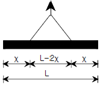
- 0.1L
- 0.2L
- 0.3L
- 0.4L
(정답률: 44%)
113. 가설구조물이 가지고 있는 구조상의 문제점이 아닌 것은?
- 연결 부재가 부족하다.
- 부재의 단면적이 커서 대체로 안정하다.
- 부재의 결합이 간략하여 불완전하다.
- 조립도의 정밀도가 낮다.
(정답률: 59%)
114. 다음 중 작업발판의 안전지침으로 옳지 않은 것은?
- 근로자가 작업 또는 이동하기에 충분한 넓이가 확보 되어야 한다.
- 발판의 폭은 30cm 이상이어야 한다.
- 발판재료는 2개 이상의 지지물에 부착시켜야 한다.
- 발판재료 간의 틈은 3cm 이하로 한다.
(정답률: 57%)
115. 터널 작업 중 강아치 지보공 조립시 안전조치 사항으로 틀린 것은?
- 연결 볼트 및 띠장 등을 사용하여 튼튼히 연결한다.
- 출입구 부분에는 받침대를 설치한다.
- 아치작용이 충분히 되도록 쐐기를 박는다.
- 조립간격은 암질에 따라 다르나 최대 3m 이하로 한다.
(정답률: 59%)
116. 건설공사에서 운반기계로 분류되지 않는 것은?
- 어스오거
- 포크리프트
- 모터스크레이퍼
- 페이로더
(정답률: 40%)
117. 다음 중 사용을 금지해야 하는 부적격한 와이어로프가 아닌 것은?
- 이음매가 없는 것
- 와이어로프의 한 가닥에서 소선의 수가 10% 이상 절단된 것
- 지름의 감소가 공칭지름의 7%로 초과하는 것
- 꼬인 것
(정답률: 59%)
118. 지하 매설물의 인접작업에 대한 안전지침으로 옳지 않은 것은?
- 사전조사
- 매설물의 방호조치
- 지하매설물의 파악
- 소규모 구조물의 방호
(정답률: 52%)
119. 콘크리트 타설시의 유의사항 중 옳지 않은 것은?
- 슈트, 펌프배관, 버킷 등으로 타설시에는 배출구와 치기면까지의 가능한 높이를 2m 이하로 해야 한다.
- 비비기로부터 타설시까지 시간은 25℃ 이상에서는 1.5시간을 넘어서는 안된다.
- 타설시 콘크리트의 재료분리는 가능한 적게 일어나도록 해야 한다.
- 최상부의 슬래브는 이어붓기를 되도록 피하고, 일시에 전체를 타설한다.
(정답률: 31%)
120. 다음 공법 중 잠수병 및 연락시설(Interphone)과 관련 있는 굴착공법은?
- 아일랜드(Island) 공법
- 케이슨(Caisson) 공법
- 플로팅(Floating) 공법
- 트렌치 커트(Trench cut) 공법
(정답률: 38%)